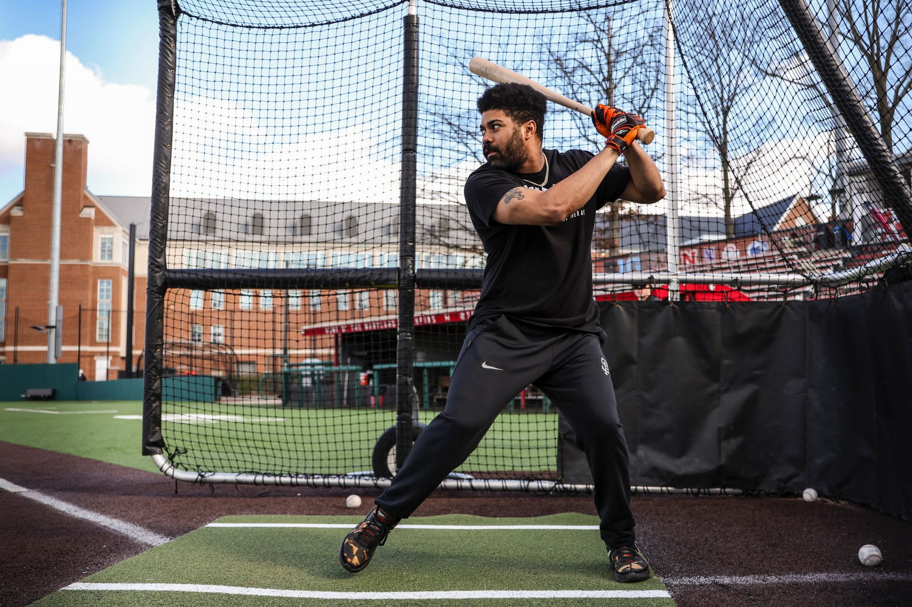
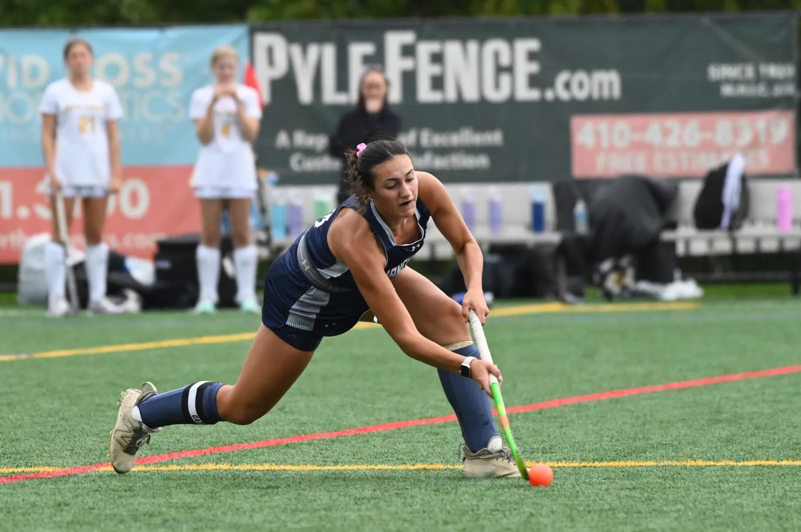
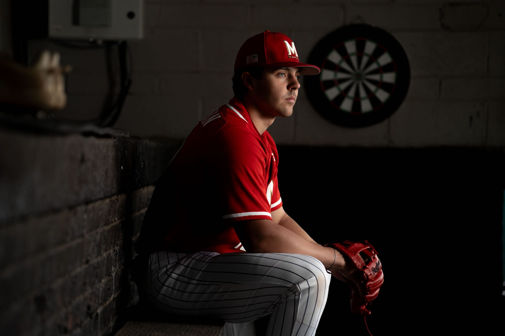
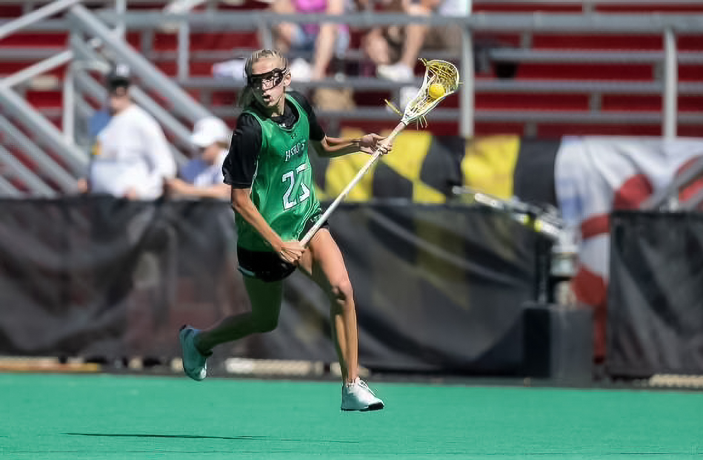

Experience
- The Washington Post
- The Baltimore Sun
- The Diamondback
- Baseball Beat Writer (Jan. 2024-Present)
- Recruiting Beat Writer (June 2024- Present)
- Sports General Assignment Beat Writer (Aug. 2023- Dec. 2023)
- Under the Shell Podcast
- Co-host and founder of weekly, hour long podcast (Sept. 2022-Present)
- Analyzes University of Maryland Athletics and interviews with members of Maryland Athletics
- Terrapin Sports Central
- Women's Basketball Beat Writer (Sept. 2023-March 2024)
- Baseball Beat Writer (Feb. 2023-June 2023)
- Field Hockey Beat Writer (Sept. 2022- Nov. 2022)
- PressBox Online
- Summer Intern (May 2023- Aug. 2023)
- Wrote weekly articles for the online publication
- Edited, fact checked, and proofread articles published online
- High School Sports Freelancer (Oct. 2023- Present)
- High School Sports Freelancer (Sep. 2024- Present)
Meet Evan Johnson, Maryland baseball’s No. 1 fan

For The Diamondback
March 28, 2024
A woman’s faint voice echoed across Bob “Turtle” Smith Stadium from the first baseline bleachers.
“Let’s go, JMU!”
Evan Johnson stiffened his back. Perched behind home plate, donning a cream-colored Maryland jersey with a cursive red logo sprawled across the chest, he retaliated.
“Let’s go, Maryland!”
It was only the third batter of a cold, early-March nonconference game. But Johnson had to take command of what he calls his ballpark.
“You’re not out-yelling me,” Johnson said. “That’s not going to happen.”
He was the only one bellowing the chant in the sparsely-filled stadium. But the surrounding Maryland fans clapped to the beat of his roar.
The 26-year-old Bowie native tries to attend as many Maryland baseball games as possible. He grew up a fan of Washington’s professional teams, but intensified his support for Terps baseball in recent seasons. The team has even recognized his energy.
“We love him a lot,” junior outfielder Elijah Lambros said.
In a stadium that seats fewer than 3,000 without a jumbotron, Johnson strives to establish a home-field advantage with his conglomerate of dances and cheers. He knows his antics draw attention. Johnson doesn’t mind.
Read more here
Maryland baseball coach Matt Swope helped revive LaMonte Wade Jr.’s career
For The Diamondback
October 4, 2024
Cays after his 2024 season with the San Francisco Giants ended, former Maryland outfielder LaMonte Wade Jr. came back to College Park. He sat in his old dugout and chatted with current Terps as the team played one of their first scrimmages.
His main reason for the visit, however, was catching up with Maryland baseball head coach Matt Swope.
The two text nearly every day throughout the MLB season. Swope watches every at-bat he takes. Wade, who just finished his sixth season in the majors, credits Swope for turning his career around.
The big-leaguer contacted his former assistant coach in 2020 looking for help. He wasn’t hitting at a high level and couldn’t carve out a significant role with the Minnesota Twins, who traded him to San Francisco that offseason.
Wade recorded career-highs in home runs, RBIs and on-base plus slugging percentage following his work with Swope that winter. His offseason training with the Maryland coach is now routine.
“He’s not a robot. Everybody is different and he realizes that,” Wade said. “He doesn’t try to coach everybody to swing the same.”
SThe pair convened in Swope’s basement at the beginning of the winter to discuss their offseason plans. For two hours, Swope displayed a PowerPoint presentation detailing how he’d tweak the struggling swing.
Swope wanted to ensure Wade was committed to the work before they began. And he bought in.
Read more here
Sophie Baer thriving in her role as facilitator for Manchester Valley field hockey
For The Baltimore Sun
October 5, 2024
Sophie Baer always wanted to be captain.
As a freshman and sophomore at Manchester Valley, Baer said she looked up to her captains. When her turn came, she wanted to be that model for her teammates.
Baer’s unselfish play has guided the Mavericks and is heralded by teammates and her coach. She feels they have the most connected roster in her four years at Manchester Valley and the team is focused on winning the Class 2A state championship after “devastating” postseason losses the past two seasons.
Splitting time between midfield and defense, Baer doesn’t get as many opportunities to score. But she’s not trying to. Manchester Valley coach Denean Koontz remembers Baer’s unselfishness standing out since her freshman year.
“She has all the intrinsic characteristics of a player that any coach would want on their team,” Koontz said. “She will play anywhere she is needed to help the team win.”
The senior brings a high field hockey IQ to the team, whether it be searching for her open teammate or knowing where to be on defense.
“A lot of people look at girls who do score all the time … a lot of the time defense does get overlooked in that kind of aspect,” Baer said. “I think just playing in between the 50s and transferring the ball is so important in the game of field hockey.”
Her unselfishness is a trait adopted from playing with her older sister, Abbi, during her freshman year. Abbi Baer played less than her younger sister during her senior year, yet, Sophie watched as she attended practice each day with the same work ethic as her teammates.
Read more here
‘He’s a psycho’: Chris Hacopian’s drive has him ready to be the face of Maryland baseball
For The Diamondback
May 15, 2024
Chris Hacopian filled a tan, wooden booth with his friends inside the restaurant Don Pollo nearly every night in high school. Hacopian would order chicken and rice. For one hour, he was outside of baseball.
The group would then stroll across the street to The Baseball Zone, a facility in Gaithersburg owned by Hacopian’s father, Derek.
Five batting cages are spread across the 21,000-square foot indoor facility. A turf field sprawls across another side, with a weight room to the right.
The crew would stay until 2 a.m. lifting, batting and fielding ground balls. Hacopian looked forward to the sessions every day. He was, and still is, obsessed with getting better. Maryland’s freshman knows what he wants. He’s been determined to play professional baseball his entire life.
“He’s one of the best freshmen I’ve ever seen,” coach Matt Swope said. “His pro future is bright. He’s just special. He’s just different. He’s just an elite player.”
Hacopian made an immediate impact for the Terps this season. He’s hit the third most home runs as a freshman in program history and is three homers away from tying the record.
Swope isn’t surprised. In high school, Hacopian was the first Winston Churchill player to earn Maryland Gatorade Baseball Player of the Year honors as the Bulldogs won the Montgomery County 4A West region in 2022.
“He was very humble and he had every reason to not be,” Pat Skellchock, Hacopian’s coach at Churchill, said.
Read more here
Va. cross-country: Senior propels West Springfield girls; Woodbridge boys prevail

For The Washington Post
November 11, 2023
As a freshman, Aidan MacGrath told her coach, “I’ll never be able to do that.” Skinny and small, as she described herself, the West Springfield High runner did not believe she could win a state competition.
Three years later she proved her younger self wrong, darting to a first-place finish at the Virginia Class 6 girls’ cross-country meet to cap her senior season and vault the Spartans to a team victory with 62 points, just ahead of Robinson (64) and W.T. Woodson (65).
“It’s like your dream came true,” MacGrath said after finishing the 5K race at Oatlands in Leesburg in 18 minutes 11 seconds. “… I’m just happy I was able to push through it and hear everyone cheering and coming first.”
MacGrath began consistently going on long runs her junior year to strengthen her body, she said. She also started to monitor what she was eating to keep herself in a healthy physique.
The Spartans secured their second straight team title for the first time in school history — even after falling to rival W.T. Woodson in the district and region championships.
“We didn’t win the small prize and we didn’t win the medium prize, but we won the large prize, and that’s the one that goes down in history,” Coach Chris Pellegrini said.
Read more here
Cayden Reese grew up with Maryland women’s lacrosse. Now she’ll join it.
For The Diamondback
September 22, 2024
A sea of white Maryland jerseys dogpiled onto Homewood Field after the Terps’ 2019 women’s lacrosse national championship victory.
Cayden Reese weaved through the stands to meet her mother, longtime Maryland coach Cathy Reese, and join the celebration as confetti poured onto the field.
The 12-year-old watched the Terps cut the nets and hoist the bronze and walnut trophy — the fifth title she saw Maryland win with her mother at the helm. Goalkeeper Megan Taylor embraced the younger Reese with the net draped around her neck and a black championship cap on her head.
“This could be you one day,” Reese recalled Taylor telling her.
Five years later, Reese is one step closer.
Her Sept. 1 commitment to Maryland fulfills a lifelong ambition. Inside Lacrosse’s top-ranked 2026 recruit follows a line of Terp family members, and she now has a chance to win a title with the team she grew up with.
“I’ve always known that I wanted to go to Maryland. It’s kind of been my dream since I was a little kid,” Reese said. “Just being able to wear that uniform, it’s something special since it runs in my family.”
Read more here